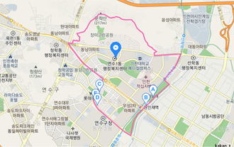

NICEBIZMAP 상권분석 서비스
(NICE D&R)
- 기준 데이터 YYYY년 MM월 상권분석데이터
- 지정주소 #시도 #시군구 #행정동
- 선택업종 #대분류 > #중분류 > #소분류
1. 상권현황
- #행정동 상권은 #상권유형 상권이며, 상권 내 #소분류 업종의 점포수는 nn개로 분석되었습니다.
-
상권명 #행정동 상권 상권유형 #상권유형1 nn%(#상권유형2 nn%, #상권유형3 nn%, #상권유형4 nn%, 그 외 nn%) 사실현황 관공서 n개, 교육기간 n개, 금융기간 n개, 버스정류장 n개, 지하철역(xx역, xx역 ...) #소분류 점포수 nn개 전체업종 점포수 n,nnn개 #소분류 업종 비중 n,nn% -
상권유형
① 주거지역(주거인구 비율이 높은 지역) ② 상업지역(상업시설 비율이 높은 지역) ③ 직장오피스가(직장 및 오피스 비율이 높은 지역) ④ 역세권(지하철 역 반경 250m에 위치한 지역) ⑤ 기타교통중심지(버스터미널 또는 공항 주변 지역) ⑥ 대학/학원가(인근에 대학교 또는 학원가가 있는 지역) ⑦ 특수시설(대형병원, 관공서, 휴게소 주변 지역) ⑧ 공업중심지역(공업용지 비율이 높은 지역) ⑨ 기타
2. 상권지도
- 
3. 업종 경기동향
-
#행정동 #소분류 업종의 yyyy년 mm월 매출수준은 전월 대비 n.nn포인트 증가한 nn.nn포인트 입니다.
(기준 : #시도의 행정동 #소분류 업종 평균 매출액을 100포인트로 환산) -
#행정동 #소분류 업종 매출수준 :
nn.nn 포인트 (yyyy년 mm월 기준) -
평균매출
#행정동의 #소분류 업종 6개월 평균 매출 수준은 nn.nn 포인트 입니다.#행정동
인접 #행정동 #소분류 업종 중 6개월 평균 매출이 가장 높은 곳은 #행정동이며 nn.nn포인트 입니다.#행정동
인접 #행정동 #소분류 업종 중 6개월 평균 매출이 가장 낮은 곳은 #행정동이며 nn.nn포인트 입니다. - 상세보기
-
주변지역과 업종 매출수준 비교
단위: 포인트매출수준 #시도 행정군 평균 YYYY년 MM월 NN.NN YYYY년 MM월 NN.NN YYYY년 MM월 NN.NN YYYY년 MM월 NN.NN YYYY년 MM월 NN.NN YYYY년 MM월 NN.NN #행정동 YYYY년 MM월 NN.NN YYYY년 MM월 NN.NN YYYY년 MM월 NN.NN YYYY년 MM월 NN.NN YYYY년 MM월 NN.NN YYYY년 MM월 NN.NN #행정동 YYYY년 MM월 NN.NN YYYY년 MM월 NN.NN YYYY년 MM월 NN.NN YYYY년 MM월 NN.NN YYYY년 MM월 NN.NN YYYY년 MM월 NN.NN -
전문가 의견
업종 매출수준은 매월 상위광역시도 전체의 점포별 평균 매출수준에 비해 선택한 지역의 매출수준이 높고 낮음을 파악하여 선택지역의 업종 경기수준을 비교해볼 수 있는 지표입니다. 선택지역의 경기가 좋고 나쁨은 상위광역시도 평균 100포인트)을 기준으로 살펴볼 수 있습니다. 예를 들어, 소공동의 이번 달 업종 매출수준이 100포인트일 경우 상위광역시도인 서울특별시 평균과 업종경기가 비슷한 수준임을, 126포인트일 경우 서울특별시 평균의 1.26배 수준으로 업종 경기가 좋음을, 84포인트일 경우 서울특별시 평균의 0.84배 수준으로 업종경기가 좋지 않음을 의미합니다. 선택지역의 업종 매출수준을 주변 행정동과 순위로 비교 하여 사업의 시장 경기를 판단할 수 있습니다. 예를 들어, 서울특별시에 위치한 상권이라면 서울특별시 전체 행정동과 비교하여 업종 매출수준이 상위 20%안에 들어가면 5(좋음)등급으로 판정됩니다. 또한, 업종 매출수준을 시계열별 (6개월)로 살펴보아 향후 선택지역 내 해당 업종의 사업 성장 및 쇠퇴 여부를 가늠해 보시기 바랍니다. 업종 매출수준 순위 : 선택지역의 업종 매출수준 값의 순위를 5단계로 구분하여 표시합니다.순위 업종 매출수준 1(나쁨) 업종 매출수준이 인천광역시 내 0~20%일 경우 2 업종 매출수준이 인천광역시 내 20%~40%일 경우 3 업종 매출수준이 인천광역시 내 40%~60%일 경우 4 업종 매출수준이 인천광역시 내 60%~80%일 경우 5 업종 매출수준이 인천광역시 내 80%~100%일 경우
4. 매출 분석
- #행정동 #소분류 업종의 yyyy년 mm월 매출액은 nnn만원으로 추정되며, 이는 #시도 대비 nn.nn% 낮은 것으로 분석되었습니다.
-
#행정동 #소분류 업종 매출
yyyy년 mm월 기준평균 중간값 상위 20% 하위 20% Nnn만원 Nnn만원 Nnn만원 Nnn만원 -
매출성장률
#행정동 상권 기준 #소분류 업종의 6개월간 매출 월평균 성장률은 -n%로 감소세입니다.#시군구 대비
#행정동 상권 기준 #소분류 업종의 6개월간 평균 매출액은 #시군구 대비 n% 낮은것으로 추정됩니다.#시도 대비
#행정동 상권 기준 #소분류 업종의 6개월간 평균 매출액은 #시도 대비 n% 낮은것으로 추정됩니다. - 상세보기
-
주변지역과 업종 매출수준 비교
단위: 포인트매출수준 #시도 행정군 평균 YYYY년 MM월 NN.NN YYYY년 MM월 NN.NN YYYY년 MM월 NN.NN YYYY년 MM월 NN.NN YYYY년 MM월 NN.NN YYYY년 MM월 NN.NN #행정동 YYYY년 MM월 NN.NN YYYY년 MM월 NN.NN YYYY년 MM월 NN.NN YYYY년 MM월 NN.NN YYYY년 MM월 NN.NN YYYY년 MM월 NN.NN #행정동 YYYY년 MM월 NN.NN YYYY년 MM월 NN.NN YYYY년 MM월 NN.NN YYYY년 MM월 NN.NN YYYY년 MM월 NN.NN YYYY년 MM월 NN.NN -
전문가 의견
상권 평균 추정매출: 현재 지정한 범위 내에서 동종 업종으로 점포를 운영하는 사업장들의 평균매출입니다. 사업자 정보보호를 위해 4개 매장 이하인 경우에는 매출이 제공되지 않습니다. 평균값과 중간값을 동시에 제공하는 이유는 소수 점포에 의해 평균값이 지나치게 높아지거나 낮아지는 현상이 나타나기 때문입니다. 매출을 가늠하는 용도로 중간값이 더 적합하다면 중간값을 기준으로 판단하시기 바랍니다. 상권내 동일 업종 점포들의 매출액 범위를 파악하면 창업을 했을 때 달성가능한 매출액 범위를 추정할 수 있습니다. 예를 들어 상권 평균 매출액이 3,000만원이고 하위 20%의 매출액이 1,000만원, 상위 20%의 매출액이 5,000만원이라면 달성가능한 매출범위는 약 1,000만원~5,000만원이 될 것입니다. 최저 1,000만원, 평균 3,000만원, 최고 5,000만원의 매출액을 달성한다고 가정하고 손익계산을 해 보시기 바랍니다. 타 상권과 평균매출액을 비교함으로써 지정 상권의 업종 상황을 알 수 있습니다. 예를 들어 평균매출액이 타 상권에 비하여 높다면, 상권내 지정 업종은 이용 고객 수에 비하여 점포수가 적다는 의미입니다. 자칫 창업에 유리한 상권이라고 판단할 수 있지만 향후 창업자의 증가로 경쟁이 치열해 질 수 있음을 고려해야 합니다. 반대로 평균매출액이 타 상권에 비하여 낮다면, 경쟁점포가 많거나 이용고객의 수가 적은 것이므로 이를 극복하기 위한 전략이 있다면 창업에 유리한 상권이 될 수 도 있습니다. 예비창업자가 월매출을 직접 추정할 때에는, 음식점을 예로 고객이 1인당 평균적으로 지불하게 될 ‘객단가’와 ‘이용 가능한 좌석수’ 그리고 점심시간과 저녁시간의 ‘회전율’을 파악하여 ‘객단가×이용 좌석수×회전율’ 공식으로 일일 매출액을 추정한 후 영업일을 곱하여 기대되는 월매출을 계산할 수 있습니다.순위 업종 매출수준 1(나쁨) 업종 매출수준이 인천광역시 내 0~20%일 경우 2 업종 매출수준이 인천광역시 내 20%~40%일 경우 3 업종 매출수준이 인천광역시 내 40%~60%일 경우 4 업종 매출수준이 인천광역시 내 60%~80%일 경우 5 업종 매출수준이 인천광역시 내 80%~100%일 경우
5. 경쟁 분석
- #행정동 #소분류 업종의 최근 6개월간 전체 이용건수는 감소/증가 추세, 점포수는 증가/감소 추세이며 점포당 이용건수는 증가/감소 추세입니다.
-
전체 이용건수
#행정동 상권 기준 #소분류 업종의 6개월간 전제 이용건수는 -n%로 감소세입니다.점포 수
#행정동 상권 기준 #소분류 업종의 6개월간 점포수는 n%로 증가세입니다.점포당 이용건수
#행정동 상권 기준 #소분류 업종의 6개월간 점포당 이용건수는 -n%로 감소세입니다. - 상세보기
-
점포 수와 이용건수
단위: 전체이용건수(건), 점포 수(업체)점포수/이용건수 점포수(월말기준) YYYY년 MM월 NN.NN YYYY년 MM월 NN.NN YYYY년 MM월 NN.NN YYYY년 MM월 NN.NN YYYY년 MM월 NN.NN YYYY년 MM월 NN.NN 전체이용건수(월) YYYY년 MM월 NN.NN YYYY년 MM월 NN.NN YYYY년 MM월 NN.NN YYYY년 MM월 NN.NN YYYY년 MM월 NN.NN YYYY년 MM월 NN.NN 점포당 평균이용건수(월) YYYY년 MM월 NN.NN YYYY년 MM월 NN.NN YYYY년 MM월 NN.NN YYYY년 MM월 NN.NN YYYY년 MM월 NN.NN YYYY년 MM월 NN.NN -
업력분석
#행정동 #소분류 업종을 운영하는 점포들의 평균업력은 n.n년으로 #시도 평균 대비 긴/짧은 것으로 분석 되었습니다. (업력은 사업체의 운영 연수를 말하며, 창업 후 사업의 연속성을 비교하여 가늠할 수 있습니다.)#시군구 대비 업력
#행정동 상권 기준 #소분류 업종의 평균업력은 #시군구 (n.n년) 대비 n.n년 깁/짧습니다.#시도 대비 업력
#행정동 상권 기준 #소분류 업종의 평균업력은 #시군구 (n.n년) 대비 n.n년 깁/짧습니다.상세보기평균업력 비교
단위: 년#시도 #시군구 #행정동 n.n n.n n.n
6. 고객 분석
-
고객군별 현황
#행정동 #소분류 업종을 이용하는 고객 분포는 주거인구 nn%, 직장인구 nn% 및 유입인구 nn%로 구성되며 주거/직장/유입 인구가 가장 큰 비중을 차지하고 있습니다.- n.n%
- n.n%
- n.n%
주거인구 상권 내 거주인구 직장인구 상권 내 직장을 두고 출퇴근하는 인구 유입인구 주거인구와 직장인구에 포함되지 않는 외부 유입인구 -
요일별 고객 이용 비중
#행정동 #소분류 업종의 요일별 고객 이용 비중은 토요일이 가장 높고, 월요일이 가장 낮은 것으로 추정되었습니다.최다이용 요일 최저이용 요일 X요일 (n.n%) X요일 (n.n%) 상세보기요일별 고객 이용 비중
단위: 년월 n.n 화 n.n 수 n.n 목 n.n 금 n.n 토 n.n 일 n.n 전문가 의견
상요일별 고객 이용비중: 상권 내에서 고객의 이용패턴을 요일별로 파악하여 사업전략에 활용하실 수 있습니다. 예를 들어, 여의도 상권은 오피스상권이므로 주말보다는 평일이, 홍대 상권은 상업시설 밀집지역이므로 주말 장사가 더 잘되는 것을 데이터를 통해 파악하실 수 있습니다. 또한, 요일별 고객 이용비중이 낮은 요일을 휴무일로 정하거나 비중이 낮은 요일에 할인이벤트를 실시하는 등 점포운영에 다양하게 활용하실 수 있습니다. -
시간대별 고객 이용 비중
#행정동 #소분류 업종에서 매출액이 가장 높은 시간은 nn~nn시 이며, 매출건이 가장 높은 시간은 nn~nn시 입니다.매출액 비중
최다 매출액 시간 최저 매출액 시간 Nn시 ~ nn시(n.n%) Nn시 ~ nn시(n.n%) 매출건 비중
최다 매출건 시간 최저 매출건 시간 Nn시 ~ nn시(n.n%) Nn시 ~ nn시(n.n%) 상세보기시간대별 고객 이용 비중
단위: %매출액 비중 매출건 비중 24~06시 n.n n.n 21~24시 n.n n.n 18~21시 n.n n.n 12~15시 n.n n.n 09~12시 n.n n.n 06~09시 n.n n.n 전문가 의견
시간대별 고객 이용비중: 시간대별 고객 이용비중은 하루 중 고객이 집중되는 주력 시간대를 파악하는데 유용합니다. 보통 업종별로 유사한 피크타임 패턴을 보일거라 예상하지만, 상권의 활성화 정도에 따라 하루에도 피크타임의 패턴 및 횟수가 다르게 나타날 수 있습니다. 이러한 주력 시간대를 상권별, 업종별로 파악하여 영업시간 조정 및 인력배치에 적절히 활용하면 투자시간과 투자비용대비 효율성을 이끌어 낼 수 있습니다. -
성별/연령대별 고객 이용 비중
여성
최다이용 최저이용 Nn시 ~ nn시(n.n%) Nn시 ~ nn시(n.n%) 남성
최다이용 최저이용 Nn시 ~ nn시(n.n%) Nn시 ~ nn시(n.n%) 상세보기성별/연령대별 고객 이용 비중단위: %매출액 비중 매출건 비중 20~29세 n.n n.n 30~39세 n.n n.n 40~49세 n.n n.n 50~59세 n.n n.n 60세이상 n.n n.n 전문가 의견
성별/연령대별 고객 이용비중: 성별/연령대별 고객 이용 비중을 통해서는 선택한 지역과 업종을 주로 이용하는 타겟고객을 파악할 수 있습니다. 남성이 소비를 주도하는지, 여성이 소비를 주도하는지, 20~30대 젊은층에게 인기가 있는지, 40~50대 장년층에게 인기가 있는지를 파악할 수 있으며 그러한 타겟고객에 맞는 매장인테리어와 메뉴구성, 상품 가격 결정 등 다양한 점포마케팅에 활용하실 수 있습니다. -
고객 연령대 변화
#행정동 #소분류 업종은 전년대비 nn~nn세 남성/여성 고객 이용률이 가장 증가하였으며 nn~nn세 남성/여성 고객 이용률이 가장 감소하였습니다.이용률 증가 이용률 감소 Nn시 ~ nn시(n.n%) Nn시 ~ nn시(n.n%) 상세보기성별고객 연령대 변화단위: %YYYY년 MM월 YYYY년 MM월 증감 20~29세 n.n n.n n.n 30~39세 n.n n.n n.n 40~49세 n.n n.n n.n 50~59세 n.n n.n n.n 60세이상 n.n n.n n.n
7. 지역 분석
-
일 평군 유동인구 수
#행정동 상권의 일 평균 유동인구 수는 nnn명으로 #시도 대비 nn.nn% 적은/많은 것으로 분석됩니다.#시군구 대비 유동인구
#행정동 상권 기준 일 평균유동인구수는 #시군수 (nnn명) 대비 n.n% 적/많습니다.#시도 대비 유동인구
#행정동 상권 기준 일 평균유동인구수는 #시도 (nnn명) 대비 n.n% 적/많습니다.상세보기일 평균 유동인구 수
단위: 명#시도 #시군구 #행정동 nnn nnn nnn 전문가 의견
일 평균 유동인구 수는 선택지역 내 분포한 유동인구 조사지점에서 일주일간 계수한 유동인구 수를 일(하루) 기준으로 평균한 값입니다. 지역 내의 전반적인 유동인구 규모를 파악할 수 있으며, 상위지역 평균과 비교하여 분석 지역의 유동성을 수치로 확인해 볼 수 있습니다. 유동인구수가 많다는 것은 지정 상권 주위를 도보로 이용하는 고객의 수가 많으므로 창업자의 입장에서는 목표 고객의 수가 많을 가능성이 높다고 판단 할 수 있습니다. 다만 유동인구의 구성과 특성을 파악하는 것이 중요합니다. 예를 들어 등하교 목적의 유동인구, 출퇴근 목적의 유동인구, 쇼핑목적의 유동인구, 비거주자 유동인구, 거주자 유동인구, 구매력이 있는 유동인구, 교통수단만을 이용하기 위한 유동인구 등 다양한 목적과 특성을 파악함으로써 목표고객이 될 수 있을지 판단해야 합니다. 이 외에도 유동인구 조사는 반드시 실사를 통한 검증이 필요합니다. 보고서에 명시된 유동인구 조사를 바탕으로, 창업 희망지 주변의 유동인구의 동선은 어떤지, 유동인구의 이동속도는 어떤지, 유동인구가 머무르지 않고 단지 이동을 위해 흘러가지는 않는지 등을 여러 가지 요소를 꼼꼼하게 살펴보신 후 창업에 대한 의사결정을 하셔야 합니다. -
성별/연령대별 주거인구 수
여성
최다비중 최다비중 10~19세 미만 30~39세 미만 남성
최다비중 최다비중 10~19세 미만 30~39세 미만 상세보기성별/연령대별 주거인구 수
단위: 명구분 전체 여성 남성 계 nnn nnn nnn 10세미만 nnn nnn nnn 10~19세 nnn nnn nnn 20~29세 nnn nnn nnn 30~39세 nnn nnn nnn 40~49세 nnn nnn nnn 50~59세 nnn nnn nnn 60세 이상 nnn nnn nnn